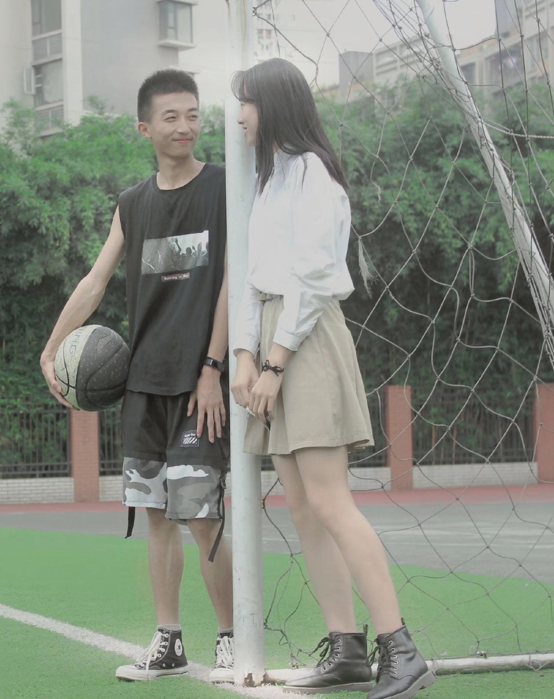
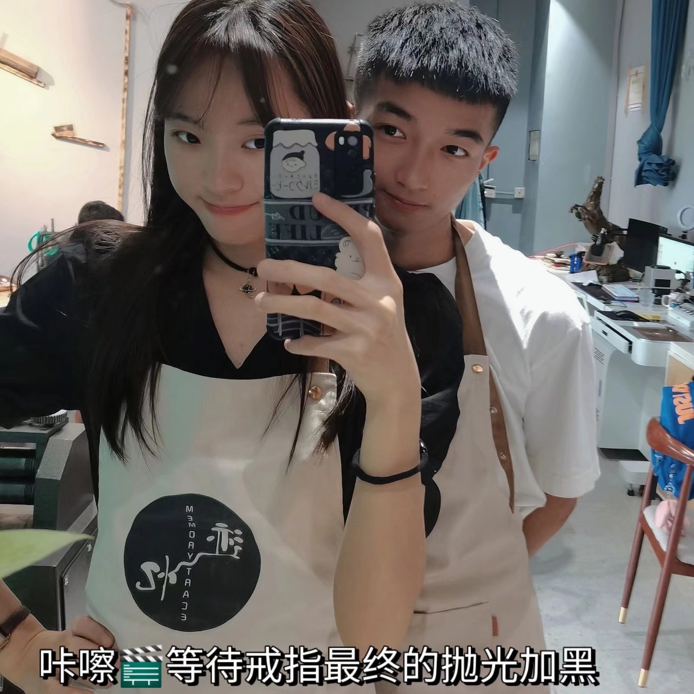

我们一起度过的美好时刻
生命是一场华丽的烟火，我们不愿停在原地徘徊留恋，纵使头顶漫天的火树银花。追梦，循着歌声一路向前。循着青春记忆的步调。
曾几何时，当我们遥望头顶的灿烂星河，那夜夜的星辉依旧洒满我们的心房，却不见了为牛郎织女感伤的泪光。因为长大，而不再相信童话。

懵懵懂懂的睁开一只眼睛，于白日里看着这繁华的世界。若隐若现的灿烂，是一天一地的虚无，海市蜃楼里盛装着，落霞红彤彤的惊艳。景未变，青春老去，春秋的老者，会再一次站在川上，如何重复逝者如斯夫的言语。
转过熟悉却又陌生的街角，那里昨日今日的故事轮番上演，我们拿青春演绎着明天，走过书声朗朗的教室和人头攒动的绿茵场，有多少期待和梦想正要从这里扬帆起航。然而等待我们的不只有旖旎多姿的梦，还有凤凰涅盘的痛。
